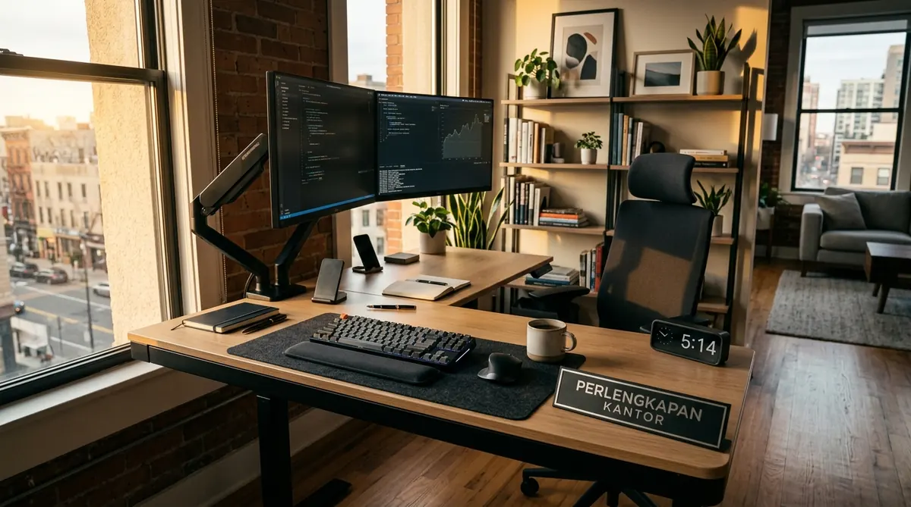

Mengatur ritme kerja dari rumah membutuhkan kedisiplinan jadwal agar urusan profesional dan kehidupan personal tidak saling tumpang tindih. Tanpa pemisahan yang jelas, fleksibilitas kerja jarak jauh justru sering kali berujung pada kelelahan mental, stres berkepanjangan, dan penurunan daya fokus harian. Dengan mengombinasikan kebiasaan terencana serta dukungan perangkat kerja berkualitas dari Perlengkapan Kantor, Anda dapat menjaga produktivitas optimal sekaligus menikmati waktu istirahat yang berkualitas bersama keluarga.
Mengapa Batasan Jam Kerja Sering Kali Kabur Saat Menjalani WFH?
Ketiadaan batas fisik antara ruang kantor dan ruang hunian sering membuat pekerja sulit berhenti bekerja secara psikologis saat jam dinas berakhir.
Bekerja dari rumah menawarkan kemudahan tanpa perlu menembus kemacetan lalu lintas perkotaan. Namun di balik fleksibilitas tersebut, terdapat tantangan psikologis berupa boundary blur—situasi di mana garis pemisah antara tanggung jawab pekerjaan dan urusan domestik menjadi tidak kentara. Notifikasi pesan instan, email yang terus masuk pada malam hari, serta keberadaan laptop di ruang tengah memicu dorongan kompulsif untuk terus memeriksa pekerjaan di luar jam operasional.
Menurut data Indonesia Remote Work & Workplace Wellbeing Survey 2025/2026, sebanyak 71% pekerja jarak jauh di Indonesia mengalami kelelahan mental (digital fatigue) dan merasa jam kerja mereka bertambah rata-rata 1,8 hingga 2,5 jam per hari sejak beralih ke sistem remote work. Fenomena ini bukan disebabkan oleh beban kerja semata, melainkan karena ketiadaan ritual penutupan hari kerja (end-of-day shutdown ritual) serta penataan ruang yang kurang memadai.
Bagaimana Cara Mengatur Jam Kerja di Rumah Agar Tetap Produktif?
Mengatur jam kerja rumah produktif dilakukan melalui teknik time blocking harian, pembuatan daftar prioritas terukur, dan komitmen jeda istirahat berkala.
Kunci utama dalam mempertahankan ritme kerja yang sehat adalah mengubah mindset bahwa fleksibilitas WFH bukan berarti bekerja kapan saja tanpa pola. Anda memerlukan struktur jadwal harian yang terdefinisi dengan jelas sebelum memulai hari:
- Terapkan Rutinitas Pagi yang Konsisten: Awali hari dengan ritual layaknya hendak berangkat ke kantor, seperti mandi pagi, mengenakan pakaian kerja kasual yang rapi, dan menikmati sarapan bergizi. Rutinitas ini memberikan sinyal ke otak bahwa mode kerja telah dimulai.
-
Gunakan Metode Time Blocking: Bagi hari Anda ke dalam beberapa blok waktu spesifik:
- Deep Work Block (09.00 - 11.30): Waktu khusus untuk menyelesaikan tugas analitis, perencanaan strategis, atau pembuatan dokumen penting tanpa gangguan pesan masuk.
- Communication Block (13.00 - 14.30): Waktu untuk membalas email klien, koordinasi via chat tim, dan menghadiri rapat daring.
- Admin & Follow-up Block (15.30 - 17.00): Menyelesaikan tugas administratif ringan dan menyusun agenda kerja untuk keesokan hari.
- Tetapkan Jam Istirahat Tanpa Layar: Saat jam makan siang tiba, tinggalkan meja kerja sepenuhnya. Jangan makan di depan monitor atau sambil membalas pesan kerja agar sistem pencernaan dan visual Anda beristirahat.
- Lakukan Shutdown Routine di Sore Hari: Ketika jam kerja resmi berakhir (misalnya pukul 17.00 atau 17.30), matikan notifikasi aplikasi kerja, tutup aplikasi dokumen, dan rapikan meja kerja. Ini menjadi penanda resmi bahwa Anda telah beralih ke waktu personal dan keluarga.
Mengapa Pemisahan Ruang Fisik dan Workstation Ergonomis Sangat Krusial?
Workstation ergonomis khusus menciptakan jangkar psikologis yang memisahkan ranah profesional dari ranah privat serta mencegah keluhan muskuloskeletal kronis.

Mengatur jam kerja rumah produktif menggunakan meja kerja rapi dan aplikasi pengatur waktu untuk menciptakan fokus maksimal.
Banyak pekerja remote mengawali WFH dengan bekerja di atas tempat tidur, sofa ruang tamu, atau meja makan dapur. Meskipun terasa santai pada awalnya, kebiasaan ini menimbulkan dua dampak buruk: otak kehilangan asosiasi antara tempat istirahat dengan relaksasi, dan postur tubuh mengalami tekanan berlebih akibat posisi duduk membungkuk.
Berdasarkan publikasi Southeast Asia Ergonomic & Productivity Index 2025/2026, pekerja remote yang menggunakan stasiun kerja ergonomis terdedikasi mencatat penurunan keluhan nyeri pinggang dan leher hingga 58%, serta peningkatan efisiensi fokus kerja sebesar 34% dibandingkan mereka yang bekerja dari area non-ergonomis.
Meja kerja yang kokoh dengan ketinggian tepat dan kursi kantor ergonomis yang dilengkapi lumbar support (penopang tulang belakang) menjaga sirkulasi darah tetap lancar dan mengurangi rasa lelah di pengujung hari. Ketika tubuh merasa bugar, Anda memiliki cukup energi untuk menikmati waktu luang bersama keluarga setelah jam kerja berakhir. Jika Anda ingin menata ruang kerja di rumah tanpa repot memilih komponen satu per satu, layanan pengadaan terpadu dari Perlengkapan Kantor siap memberikan solusi terbaik dengan harga yang bersahabat.
Apa Saja Aplikasi Pengatur Waktu Terbaik untuk Mendukung Ritme Kerja Remote?
Aplikasi pengatur waktu membantu membatasi durasi tugas, mencegah multitasking berlebih, dan memastikan jeda istirahat terlaksana secara disiplin.
Teknologi dapat menjadi pemicu distraksi, namun dengan konfigurasi yang tepat, aplikasi digital justru menjadi alat bantu paling andal dalam menjaga work-life balance:
- Toggl Track / Clockify: Sangat efektif untuk melacak berapa jam waktu yang dihabiskan pada setiap proyek nyata sehingga Anda tahu kapan beban kerja harian telah mencukupi kuota.
- Pomofocus / Forest: Menggunakan teknik Pomodoro (25 menit fokus penuh diikuti 5 menit rehat) untuk melatih konsentrasi tinggi tanpa memicu kejenuhan otak.
- Google Calendar / Notion Calendar: Mengatur blok jadwal harian dan menyinkronkan ketersediaan waktu antar anggota tim lintas departemen.
- Freedom / Cold Turkey: Memblokir situs media sosial dan portal berita selama jam kerja fokus guna meminimalkan penundaan kerja (procrastination).
Dengan memadukan aplikasi digital pengatur ritme dan stasiun kerja yang nyaman, Anda tidak perlu lagi mengorbankan waktu istirahat malam demi menyelesaikan pekerjaan yang tertunda di siang hari.
Tabel Komparasi Paket Penunjang Stasiun Kerja WFH Perlengkapan Kantor
Untuk memudahkan pemilihan furnitur kerja di rumah yang paling sesuai dengan kebutuhan ruang dan anggaran Anda, berikut adalah perbandingan konfigurasi paket unggulan dari Perlengkapan Kantor:
| Fitur & Spesifikasi | Paket WFH Starter | Paket WFH Ergonomis Pro | Paket WFH Executive Suite |
|---|---|---|---|
| Model Meja Kerja | Meja Minimalis HPL 100x50 cm | Meja Kayu Solid Modular 120x60 cm | Standing Desk Elektrik Dual-Motor |
| Model Kursi Kantor | Kursi Staff Mesh Breathable | Kursi Ergonomis 3D Lumbar Support | Kursi Eksekutif Kulit Ergotech Pro |
| Aksesori Pendukung | Penataan Kabel Standar | Desktop Organizer & Lampu Meja LED | Cable Spine, Monitor Arm & Lampu Task |
| Kapasitas Beban Meja | Hingga 60 kg | Hingga 100 kg | Hingga 125 kg (Stabil & Senyap) |
| Rekomendasi Pengguna | Freelancer / Ruang Kompak | Profesional / Remote Specialist | Manajer, Tech Lead & C-Level |
| Garansi Resmi | 1 Tahun Rangka & Hidrolik | 2 Tahun Mekanisme & Rangka | 3 Tahun Motor, Rangka & Komponen |
| Dukungan Pengiriman | Jabodetabek & Seluruh Indonesia | Gratis Perakitan Jabodetabek | Gratis Survei & Instalasi VIP |
Solusi Paket WFH Hemat dari Perlengkapan Kantor untuk Produktivitas Maksimal
Menciptakan ruang kerja yang mampu menyeimbangkan tuntutan karier dan kenyamanan hidup tidak harus mahal atau rumit. Perlengkapan Kantor hadir sebagai mitra terpercaya penyedia furnitur kantor dan stasiun kerja rumahan berkualitas tinggi dengan jaminan garansi resmi, kemudahan pembayaran, dan layanan pengiriman tepat waktu ke seluruh Indonesia.
Melalui penawaran Paket WFH Hemat, Anda mendapatkan kombinasi meja kerja presisi, kursi kantor ergonomis yang mampu menopang postur tubuh secara sempurna, serta aksesori manajemen kabel yang rapi. Seluruh produk kami telah melalui proses kurasi ketat untuk memastikan durabilitas tinggi, estetika modern yang cocok untuk interior rumah, serta kenyamanan kerja sepanjang hari.
Investasikan kesehatan dan produktivitas jangka panjang Anda sekarang juga. Dapatkan stasiun kerja terbaik dengan promo spesial Beli Paket WFH Hemat hanya di Perlengkapan Kantor!
Pertanyaan Populer Seputar Tips Work Life Balance WFH (FAQ)
Kesimpulan Praktis
Menerapkan tips work life balance wfh yang efektif bermuara pada kesadaran untuk membangun batasan yang jelas antara jam tugas dan waktu istirahat. Dengan menyusun jadwal harian berbasis time blocking, memanfaatkan aplikasi pengatur waktu, serta mendirikan stasiun kerja ergonomis yang terpisah, Anda dapat membebaskan diri dari jeratan burnout dan tetap tampil prima dalam karier profesional.
Wujudkan ruang kerja impian yang sehat, rapi, dan membahagiakan di rumah Anda. Dapatkan penawaran terbaik dan Beli Paket WFH Hemat berkualitas bergaransi resmi hanya di Perlengkapan Kantor!

Penulis: Tim Spesialis Perlengkapan Kantor
Divisi Desain Interior, Ergonomi & Fasilitas Perkantoran di Perlengkapan Kantor. Berpengalaman dalam mendampingi ratusan korporat, pekerja profesional, dan pelaku bisnis di Indonesia dalam menciptakan workstation ergonomis yang produktif, nyaman, dan bebas pegal.